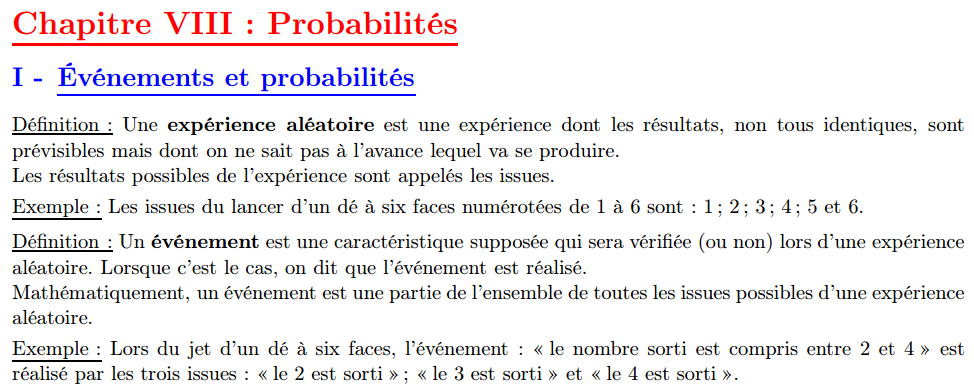
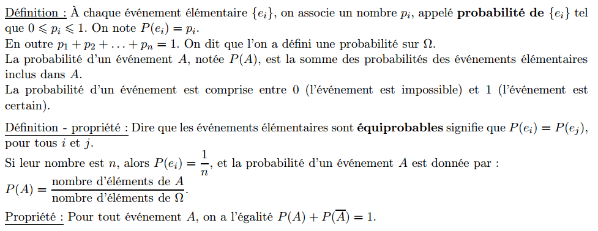
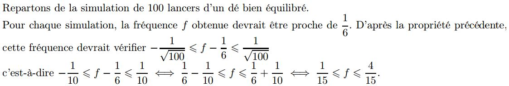

Semaine du 04 mai : Poursuite du cours sur les équations de droites (droites parallèles + systèmes d'équations linéaires).
Pour le lundi 04 mai, faire UNIQUEMENT les exercices 50 p. 232 (question3) et 52 p. 232 de la partie sur les
droites parallèles.
J'ai mis la correction des exercices.
Semaine du 11 mai : Cours sur les autres fonctions de référence (fonctions cube et inverse).
Dans le chapitre, vous avez des liens vers des exercices en ligne (je ferai une séance labomep la semaine suivante et vous en retrouverez).
Pour jeudi 14 mai : faire les exercices 104 et 105 p. 27 (résolution de deux systèmes d'équations linéaires).
Dans un premier temps, téléchargez et imprimez le fichier Support de cours
Pour la partie cours, complétez à l'aide des captures ci-dessous. Cela devrait vous permettre de retenir l'essentiel (notamment les définitions).

Pour la suite du document à compléter (exemples), vous devez aller sur lycée connecté (Exemples de calculs probabilités où vous pourrez vous tester et vérifier si vous avez bien compris les définitions).
Poursuite du cours :

Des exercices sont alors à faire sur lycée connecté.
Voici des exercices en ligne pour vous faire travailler cette partie de manière autonome :
Les étapes permettant de compléter votre partie sont dans ce pdf
Cette vidéo vous explique le cours ci-dessus. N'hésitez pas à la télécharger (15Mo) pour être sûr
de pouvoir le relire tranquillement.
Faire les exercices suivants :
Il est possible de les faire sur OpenOffice ou LibreOffice (pas fan d'un logiciel propriétaire comme Word, mais j'essaierai de vous pardonner). Vous pouvez aussi prendre une photo (mais c'est très lourd) ou un scan (éventuellement avec une appli sur smartphone - comme camScanner que j'utilise en classe).
Déposer le tout sur l'ENT.
Voici la correction de ces exercices : pdf
Voici des exercices en ligne pour vous faire travailler cette partie de manière autonome :
Propriétés des probabilités et utilisation d'un arbre au format pdf
Ces deux vidéos reprennent les deux sous-parties du document.
Faire les exercices suivants (pas besoin de les envoyer mais n'hésitez pas à poser des questions en cas de problème - éventuellement sur l'application Forum de l'ENT, tout le monde y aura accès ensuite...):
Voici la correction de ces exercices : pdf
Voici des exercices en ligne pour vous faire travailler cette partie de manière autonome :
Voici le Devoir maison N°5 et sa correction.
Cours complété : seule partie de gauche à été travaillée lundi 26 mars.
Construction de l'algorithme sur la simulation de 100 lancers de dé avec calcul de la fréquence d'apparition du 6.
Fin du chapitre avec la loi des grands nombres (en vidéo ci-dessous) :

Dernier exercice du cours (fonction simulant 500 expériences).
Voici cette partie du cours (extrait du cours complet) qui synthétise tout ce qui a été vu sur la fonction
carré. Ces propriétés nous permettent de voir comment il est possible d'utiliser les variations de la fonction carrée pour travailler sur des inégalités.
Attention car vous avez retenu l'impact des 4 opérations sur le sens d'une inégalité (dans la résolution d'inéquations notamment), mais ici il ne s'agit plus d'opérations mais d'appliquer une fonction. On utilise ainsi les variations de cette fonctions.
Les explications en vidéo :
Voici des exercices qui vont vous entrainer sur l'utilisation des variations de la fonction carrée pour travailler sur les inégalités :
Utiliser la courbe pour répondre aux questions !
Partie du cours sur les identités remarquables (extrait du cours complet). Ce sont des formules à retenir
pour le développement de la somme ou la différence de deux carrés.
La troisième identité remarquable est juste un rappel d'une égalité vue en 3ème (et déjà rappelée depuis le début de l'année).
Les explications en vidéo :
Voici deux exercices pour vous entrainer au développement:
Une autre sur la factorisation :
Partie du cours sur la résolution d'équations et d'inéquations avec la fonction carrée (extrait du cours complet).
Les explications en vidéo :
Il faut avant tout savoir résoudre ce type d'équations en utilisant la racine carrée lorsque a>0.
Utiliser également la courbe représentative
Exercices :
Voici cette partie du cours (extrait de la partie 2 complète) qui synthétise tout ce qui a été vu sur la fonction
racine carré. Ces propriétés nous permettent de voir comment il est possible d'utiliser les variations de la fonction racine carrée pour travailler sur des inégalités.
On utilise de nouveau ainsi les variations de cette fonctions.
Les explications en vidéo :
Voici un exercice qui va vous entrainer sur l'utilisation des variations de la fonction racine carrée pour travailler sur les inégalités :
Partie du cours sur les propriétés algébriques de la fonction carrée ainsi que des résolutions d'équations (extrait de la partie 2 complète).
Les explications en vidéo :
Exercices :
Voici la première partie du cours
La première partie commence par un exemple que vous devez recopier (en essayant de la faire par vous-même, une fois les calculs mis en place).
Voici la présentation de cet exercice.
Vous la retrouverez en vidéo.
L'aspect graphique est ensuite présenté là encore sous la forme d'une présentation, puis en vidéo.
Je vous propose alors des exemples de détermination graphique de l'équation réduite de droites.
Exemple 1, exemple 2 et exemple 3.
Ensuite, voici les deux exercices intégrés dans le cours (exercices 1 et 2).
Recopier les corrections de ces deux exercices (dans les fichiers, tout apparait pas à pas) :
Exercice 1 et exercice 2
Voici des exercices à faire (et à rendre) qui reprennent les notions déjà abordées :
Correction des exercices précédents
Regarder la partie du cours dans le premier fichier puis l'exercice.
Le cours traitant de cette partie est dans le premier fichier.
Voici l'exercice sous la forme d'une présentation.
Faire les exercices suivants (ils ne sont pas à rendre) :
Cours sur les systèmes linéaires de deux équations à deux inconnues.
L'interprétation géométrique présentée dans ce cours permet de savoir si un système contient un unique couple solution ou non. Cela ne constitue pas pour autant la résolution du système.
Dans un premier temps, voici une explication générale sur la résolution d'un système en vidéo.
Pour résoudre un système, on dispose de deux méthodes :
Pour vous entrainer, voici un exercice en ligne puis un deuxième.
La méthode la plus judicieuse dans chacune de ces deux exemple n'est asp nécessairement la même...
Voici un dernier exemple qui sera un cas particulier. Vous retrouvez les explications en vidéo.
Faire l'exercice suivant (ils n'est pas à rendre) :
Voici le cours complet (version élève) à imprimer.
Voici la première partie du cours, celle sur la fonction cube, extraite du cours complet.
Dans cette partie, vous devrez construire, à l'aide d'un tableau de valeur de votre calculatrice la courbe représentant la fonction cube (vérifier dans le manuel p. 123).
En complément de l'exemple proposé dans cette partie, entrainez-vous avec cet exercice.
Dans cette partie, je vous demande de compléter le tableau en parcourant la fonction balayage avec pour argument 0.1 (dans la colonne du test, on n'aura comme valeur possible que True ou False).
Cela vous permettra de déterminer la valeur
renvoyée par cette fonction.
Pour la deuxième fonction (dichotomie), c'est optionnel car plus difficile, mais je vous encourage à compléter le tableau avec les valeurs successives obtenues au cours de l'algorithme (là aussi dans les colonnes des inégalités, on ne verra que les valeurs True ou False).
En complément de cette partie, voici un exercice sur la résolution d'inéquations.
Voici la deuxième partie du cours sur la fonction inverse, extraite du cours complet
En complément voici deux exercices :